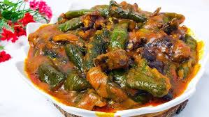

Ekwang

Description
So what is Ekwang? It is grated cocoyams tied in cocoyam leaves and cooked with palm oil and other aromatic ingredients.
This is one of the dishes that reminds me of the similarities between Nigerians and Cameroonians.
Ingredients
- Cocoyams
- Cocoyams Leaves
- Palm oil
- Crayfish
- Smoked fish
- Chopped Onions
- Green Onions
- Ginger Paste
- Freshly Blended Garlic
Steps
- Grate your cocoyams into a paste.
- wrap the cocoyam paste in leaves.
- Boil about 5 cups of water in a seperate pot
- Add crayfish, beef, onions, fish, and all the rest of ingredients except the oil to the pot.
- Transfer pot on low heat till wraps firms or holds for about 5 minutes.
- Let it cook for about 30 minutes.
- After 30 minutes, you can stir gently, then add palm oil and more water, let it cook again for 30 minutes.